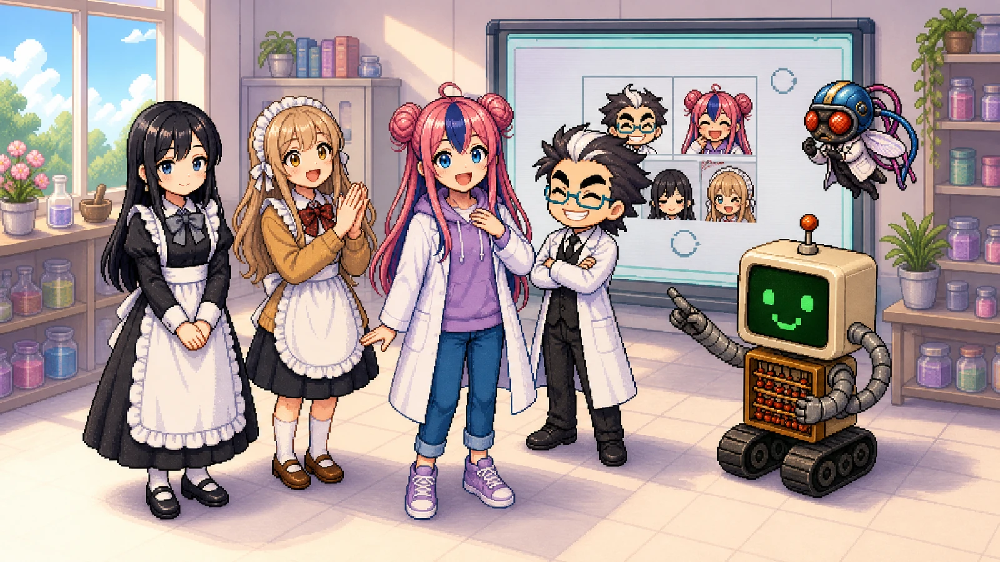
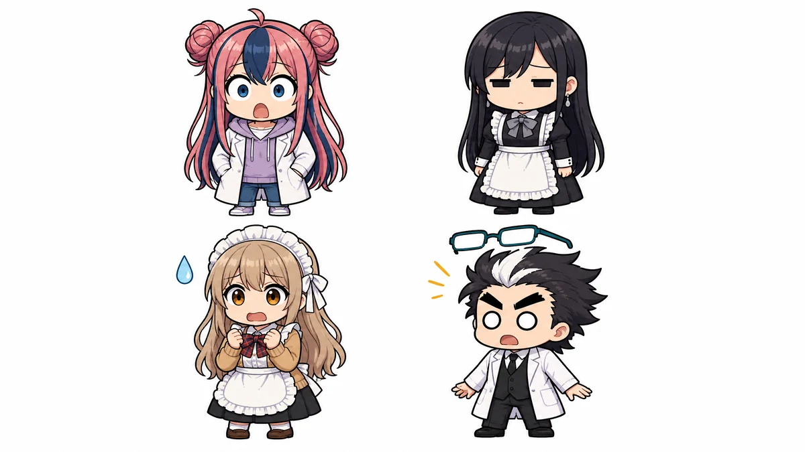
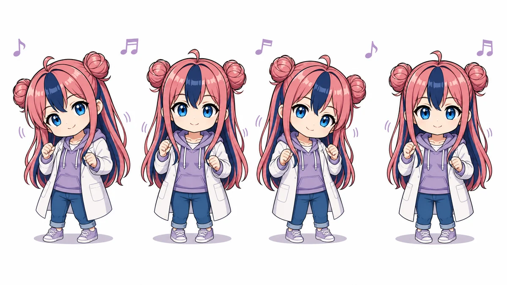
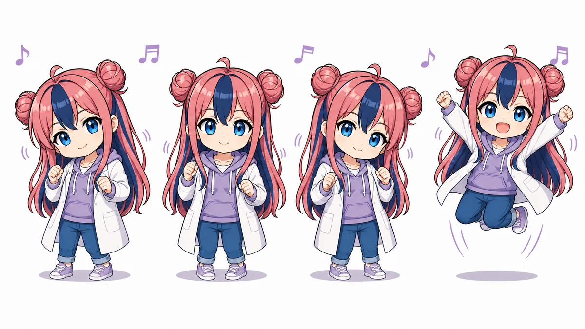

오늘의 과제

박사오늘은 AI로 연구실 리액션 짤과 반복 영상을 만든다.

주판봇"funny lab picture" 한 줄이면 됩니다!

초파리 연구원그 한 줄엔 무엇이 어긋나는지가 없어. 1~4부에서 배운 걸 조각으로 나눠 적자.

시아조각이 몇 개 필요한지 세어 보겠습니다.

모델은 연구실 모두입니다. 주판봇은 "AI에게 웃긴 거 그려 줘라고 하면 끝!"이라고 합니다. 초파리는 "AI는 무엇이 웃긴지 몰라. 어긋남을 문장으로 알려 줘야 해"라고 합니다. 1~4부의 원리를 AI에게 어떻게 전할까요?
그림 실력·코드·수식을 몰라도 됩니다. 실험을 눌러 보며 따라오세요.
누가 · 기대(평소) · 어긋남(결과) · 과장할 곳 · 화풍과 등신 · 지킬 것. 한 조각이라도 빠지면 AI가 마음대로 채웁니다
배달 주문 요청사항에 "맛있게 해 주세요"만 적으면 아무것도 바뀌지 않습니다. "덜 맵게, 소스 따로"처럼 구체적으로 적어야 합니다.
이모티콘 시안 작업에서는 감정 하나마다 "상황 → 반응 → 과장할 곳"을 표로 정리한 뒤 그림을 요청합니다. 표가 곧 프롬프트가 됩니다.


여섯 조각을 다 채우면 AI가 마음대로 정할 곳이 줄어, 어긋남과 과장이 의도대로 나올 가능성이 커집니다.
어긋남 조각이 빠지면 "웃는 캐릭터" 그림이 되고, 과장할 곳이 빠지면 전부 과장되거나 아무것도 과장되지 않습니다.
작업에서는 조각을 한 줄씩 나눠 적습니다. 다음 요청에서 한 조각만 바꾸기 쉽습니다.

여섯 조각을 다 적었는데 AI 그림에 하루가 어린아이처럼 나왔습니다. 써도 될까요?
SD 그림체를 요청하면 AI가 나이까지 어리게 바꾸는 일이 잦습니다. ⑥ 지킬 것에 "adult woman in her twenties drawn in a super-deformed comedy style, adult outfit, not a child"를 넣고 기준 그림을 함께 첨부해 다시 요청합니다.
한 컷에서 같은 얼굴이 나올 확률이 80%여도, 4컷 모두 같을 확률은 41%입니다. 기준 그림·고정 문장·한 번에 하나씩 바꾸기로 확률을 올립니다

학교 수학으로 보면 — 확률의 곱셈(독립시행)과 거듭제곱 — 0.8 × 0.8 × 0.8 × 0.8 = 0.8⁴.
| 식 조각 | 뜻 |
|---|---|
| 한 컷 성공 확률 | 한 번 요청에서 같은 얼굴·옷이 나올 확률(예시값) |
| 컷 수 | 이어 붙일 그림 장수 |
| ^ | 같은 수를 컷 수만큼 거듭 곱한다는 뜻 |
시험 문제 하나를 맞힐 확률이 80%여도, 네 문제 연속으로 다 맞힐 확률은 절반이 안 됩니다.
AI로 연재물을 만드는 작가들은 캐릭터 설정 시트(정면·옆·표정)를 먼저 만들어 두고, 모든 요청에 같은 시트와 같은 설명 문장을 붙입니다. 틀린 컷은 부분 수정으로 얼굴만 고칩니다.
한 컷 60%로 4컷이면 0.6⁴ ≈ 0.13, 요령 세 가지로 90%가 되면 0.9⁴ ≈ 0.66입니다.
컷 수를 8로 늘리면 90%여도 0.9⁸ ≈ 0.43으로 떨어집니다. 긴 이야기일수록 틀린 컷을 고치는 단계가 꼭 필요합니다.
작업에서는 모든 컷을 만든 뒤 나란히 놓고 머리 모양·장식·옷 색 세 가지를 점검합니다. 틀린 컷은 그 컷만 다시 만들거나 부분 수정합니다.
AI 4컷 중 3컷째의 모아만 리본이 오른쪽 귀 위로 옮겨 갔습니다. 전부 다시 만들까요?
전부 다시 만들면 다른 컷이 또 틀릴 수 있습니다(확률이 곱으로 줄어듦). 3컷째만 리본 부분을 칠해 부분 수정으로 "white ribbon over her LEFT ear"를 요청합니다.
한 바퀴를 프레임 수로 나눈 만큼씩 움직이고, 마지막 프레임은 한 걸음 모자란 곳에서 멈춥니다
학교 수학으로 보면 — 나눗셈과 각도 — 원 한 바퀴 360°를 똑같이 나눕니다(정다각형의 중심각과 같은 계산).
| 식 조각 | 뜻 |
|---|---|
| 프레임 수 | 한 바퀴에 들어가는 그림 장수 |
| 한 걸음 | 그림 한 장마다 움직이는 각도 |
| 마지막 프레임 | 첫 프레임 바로 앞 자리 |
회전목마, 시계 초침, 선풍기 날개 모두 한 바퀴를 돌아 처음 자리를 그대로 지나갑니다. 출발점에서 멈췄다 가면 덜컥거립니다.
이미지→영상 AI로 반복 영상을 만들 때는 "첫 장면과 끝 장면을 같은 그림으로" 지정하는 기능을 쓰거나, 만든 영상의 앞뒤를 잘라 맞춥니다. 끝을 정확히 맞추기 어려우면 영상을 앞으로 한 번, 거꾸로 한 번 재생해 이어 붙이기도 합니다.
8프레임이면 한 걸음 45°, 마지막 프레임 315°에서 이음매 튐(360° − 마지막)이 한 걸음과 같아 매끄럽습니다.
마지막을 360°에 두면 튐이 0°라 같은 그림이 두 번 나와 멈칫하고, 270°에 두면 튐이 90°로 두 걸음이라 툭 튑니다.
작업에서는 첫 프레임과 마지막 프레임을 겹쳐 보며 "한 걸음 차이"인지 확인합니다.

영상 AI로 만든 4초짜리 하루 영상이 끝에서 처음으로 돌아갈 때 머리 위치가 툭 튑니다. 어떻게 할까요?
끝 장면이 첫 장면과 다릅니다. 첫 장면 그림을 "마지막 장면"으로도 지정해 다시 만들거나, 영상에서 첫 장면과 가장 비슷한 곳을 찾아 그 앞에서 자릅니다.
챌린지·패러디는 구도와 놀이 방식을 빌리는 것입니다. 원작 캐릭터 그림, 실존 인물의 얼굴, 남을 깎아내리는 내용은 빌리지 않습니다
유행하는 춤 챌린지는 동작을 빌려 내 모습으로 찍는 놀이입니다. 남이 춘 영상을 그대로 올리는 것과는 다릅니다.
2부의 올려다보기 챌린지도 참여자들이 구도를 빌려 각자 자기 화풍으로 다시 그린 것입니다. 이 페이지가 원작 캐릭터 대신 연구실 캐릭터로만 따라 하는 까닭입니다.

구도만 빌리고 내 캐릭터로 새로 그리며 출처를 밝히면, 밈 놀이에 안전하게 참여할 수 있습니다.
원작 캐릭터 그림을 그대로 쓰거나 AI로 똑같이 만들면 형식을 빌린 것이 아니라 그림을 가져온 것입니다. 실존 인물 얼굴과 남을 깎아내리는 내용도 빨간불입니다.
작업에서는 올리기 전에 이 점검 항목을 한 번 훑습니다. 하나라도 빨간불이면 그 요소를 빼고 다시 만듭니다.
AI에게 유명 애니메이션 캐릭터 이름을 넣어 밈 그림을 요청했더니 원작과 거의 같은 그림이 나왔습니다. 올려도 될까요?
올리지 않습니다. 이름을 빼고 내 캐릭터의 설명과 기준 그림으로 다시 요청하고, 문장 끝에 "not resembling any existing anime character"를 붙입니다.
이 부에서 배운 원리를 그림 생성 AI(Genspark 등)로 직접 확인합니다. A는 이 페이지 그림을 실제로 만든 프롬프트, B는 원리를 하나 빼거나 바꾼 비교용 문장입니다.
참고 그림 내려받기: haru_anime_base · sia_anime_base · moa_anime_base · haru_sheet · sia_sheet · moa_sheet · doctor_sheet · fruitfly_sprites_6 · jupanbot_ref_genspark_v0 · pixel_style_ref_prev_cover
네 사람의 SD 리액션 스티커를 한 장에 받습니다. 스티커마다 과장한 곳 하나, 기호 하나입니다.
첨부: refs/haru_sheet.png, refs/sia_sheet.png, refs/moa_sheet.png, refs/doctor_sheet.png
Illustration, wide 16:9, a two-by-two sheet of reaction stickers. Art style: cute super-deformed comedy anime style, about 2.5 heads tall, clean bold lineart, flat cel colors with one soft shadow tone. Match the attached reference images exactly (face, hair, colors, accessories), simplified into the SD style. All characters are adults in their twenties (the Professor is an adult man in his thirties) drawn in a comedy SD style: adult personalities and adult outfits, not children; modest outfits exactly as described. Four SD reaction stickers on white, each with one exaggerated feature and at most one emotion symbol: top-left Haru (adult lab assistant, long straight pink hair with navy streaks and a thick navy streak down the center of the bangs, two round hair buns on top, small ahoge, big blue eyes), wearing lavender hoodie with white drawstrings over a white t-shirt, open white knee-length lab coat surprised with only the eyes huge; top-right Sia (adult maid intern, long straight jet-black hair, no headdress, gray eyes, small silver earrings), wearing charcoal-black long-sleeved maid dress, large gray bow at the collar, long white frilled apron deadpan with flat line eyes and a dot mouth; bottom-left Moa (adult maid intern, long ash-beige wavy hair, white frilled maid headband with a white ribbon over her LEFT ear, amber eyes), wearing camel knit cardigan over a white blouse, red and navy plaid bow tie, white frilled apron flustered with one big sweat drop beside her head; bottom-right the Professor (adult male scientist in his thirties, dark charcoal spiky hair with a white streak at the front, very thick black eyebrows, teal rectangular glasses), wearing white lab coat over a black vest, white shirt and black tie frozen stiff with his glasses floating slightly above his face. Plain white background. No text, no letters, no numbers, no speech-bubble text, no logos, no watermark, no revealing clothing, not childlike, no school uniform, not resembling any famous anime character or real person.
(새 대화, 참고 그림 첨부하지 않음) Illustration, wide 16:9, a two-by-two sheet of funny reaction stickers of four lab members: a pink-haired assistant, a black-haired maid, a beige-haired maid and a scientist with glasses. Cute chibi comedy style. Adults. No text.
실제 결과: A는 기준 그림 덕분에 네 캐릭터의 머리 모양·옷이 설정과 같고, 스티커마다 과장한 곳이 하나씩입니다(하루는 눈과 입이 함께 커짐). B는 참고 그림 없이 같은 대화가 아닌 새 대화에서 만들었더니 하루의 번이 사라지고 박사의 머리·안경이 바뀌는 등 네 명 모두 다른 사람이 되었습니다 — 2단계 일관성의 차이가 가장 크게 드러난 비교입니다.
고개를 까딱이는 네 열쇠 그림을 받고, 첫 장면을 끝 장면으로도 지정해 반복 영상을 만들어 봅니다.
첨부: refs/haru_anime_base.png, refs/haru_sheet.png
Illustration, wide 16:9. Art style: cute super-deformed comedy anime style, about 2.5 heads tall, clean bold lineart, flat cel colors with one soft shadow tone. Match the attached reference images exactly (face, hair, colors, accessories), simplified into the SD style. All characters are adults in their twenties (the Professor is an adult man in his thirties) drawn in a comedy SD style: adult personalities and adult outfits, not children; modest outfits exactly as described. Four key poses of Haru (adult lab assistant, long straight pink hair with navy streaks and a thick navy streak down the center of the bangs, two round hair buns on top, small ahoge, big blue eyes), wearing lavender hoodie with white drawstrings over a white t-shirt, open white knee-length lab coat bobbing her head to music, in a row from left to right: 1) head tilted left, 2) head upright center, 3) head tilted right, 4) head upright center again. Same size, same position, only the head tilt changes; small music notes floating. Plain white background. No text, no letters, no numbers, no speech-bubble text, no logos, no watermark, no revealing clothing, not childlike, no school uniform, not resembling any famous anime character or real person.
Same image, keep the same framing. Change only: in the fourth pose Haru also jumps up with both arms raised, a completely different pose from the first. Still no text.

A 결과 그림을 첨부하고 이미지→영상 기능에 넣습니다. 길이 2~4초, 처음과 끝 장면이 같으면 반복 재생이 매끄럽습니다.
Use the attached image of Haru with her head upright as both the first and the last frame. 2-second seamless loop, fixed camera, plain white background: she bobs her head to the left, back to center, to the right, back to center, in a steady rhythm. The last frame must match the first frame so it loops smoothly. No text.
실제 결과: A는 네 장이 같은 크기·위치라 반복 재생에 쓰기 좋지만, 고개 기울기 차이가 아주 작아 거의 같은 그림처럼 보입니다. 영상으로 만들 때는 "tilt her head clearly about 15 degrees"처럼 기울기를 크게 적어 주세요. B는 네 번째만 점프 자세라, 반복 재생하면 마지막에서 첫 장면으로 툭 튑니다.
이 부의 원리를 내 손으로 프롬프트에 옮겨 보는 과제입니다. 목표 → 순서 → 넣을 프롬프트 → 확인할 것 → 예상 결과 → 자주 생기는 문제 순서로 적었습니다. 결과는 매번 조금씩 다르니, 그림이 똑같지 않아도 '확인할 것'이 맞으면 성공입니다.
목표여섯 조각 중 "과장할 곳 하나 + 기호 하나"를 지키는 리액션 스티커 한 장을 만듭니다.
왜 이 연습인가스티커는 작게 보이므로 감정이 하나여야 읽힙니다. 기호를 하나로 정해 두지 않으면 AI가 여러 기호를 붙입니다.
첨부할 참고 그림: refs/doctor_sheet.png — 참고 그림은 위 직접 만들어 보기에서 내려받을 수 있습니다.
Illustration, square 1:1 sticker. Art style: cute super-deformed comedy anime style, about 2.5 heads tall, clean bold lineart, flat cel colors with one soft shadow tone. Match the attached reference images exactly (face, hair, colors, accessories), simplified into the SD style. All characters are adults in their twenties (the Professor is an adult man in his thirties) drawn in a comedy SD style: adult personalities and adult outfits, not children; modest outfits exactly as described. the Professor (adult male scientist in his thirties, dark charcoal spiky hair with a white streak at the front, very thick black eyebrows, teal rectangular glasses), wearing white lab coat over a black vest, white shirt and black tie, chest up, deadpan reaction sticker: completely blank face, flat line eyes behind his teal glasses, tiny dot mouth, and ONE emotion symbol only — three vertical gloom lines above his head. White outline around the character like a sticker. Plain white background. No text, no letters, no numbers, no speech-bubble text, no logos, no watermark, no revealing clothing, not childlike, no school uniform, not resembling any famous anime character or real person.
예상 결과박사가 감정 없는 얼굴로 정면을 보고, 머리 위에 세로줄 세 개만 있습니다. 흰 테두리가 있어 스티커처럼 보입니다.
| 문제 | 대처 |
|---|---|
| 땀방울까지 생겼다 | "no sweat drops"를 더함 |
| 안경 색이 바뀌었다 | "teal rectangular glasses"를 앞쪽에 다시 적음 |
실제 결과: 기호가 세로줄 하나뿐이고 안경·흰 앞머리 줄도 지켜져 성공입니다. 작게 줄여도 "할 말 없음"이 읽힙니다.
더 해 보기같은 박사로 놀람(눈만 크게)·신남(반짝이 하나) 스티커를 만들어 세 장 세트를 완성해 보세요. 5부 2단계 요령으로 일관성을 지킵니다.

| 항목 | 주판봇 | 초파리 |
|---|---|---|
| 알아봄(캐릭터가 같은가) | 4 | 9 |
| 원리(여섯 조각·일관성·이음매) | 3 | 9 |
| 웃음 | 5 | 8 |
| 합계 | 12 | 26 |


점수는 이야기 속 예시입니다. 실제 그림을 평가한 값이 아닙니다.
| 주제 | 한 줄 | 작업에서는 |
|---|---|---|
| 1단계 웃음 문장 | 누가·기대·어긋남·과장할 곳·화풍·지킬 것 | 한 줄에 한 조각 |
| 2단계 일관성 | 모든 컷 같을 확률 = p^컷 수 | 기준 그림·같은 문장·하나씩 바꾸기 |
| 3단계 반복 재생 | 한 걸음 = 360 ÷ 프레임, 마지막 = 360 − 한 걸음 | 첫·끝 프레임을 겹쳐 확인 |
| 4단계 밈 | 형식만 빌리고 그림·사람은 내 것 | 올리기 전에 점검 항목 훑기 |
이 페이지에 나온 개념·방법·비유·쓰임을 모았습니다. 검색하고, "설명 보러 가기"로 본문에 돌아갑니다.
지식 색인을 출처와 함께 파일로 내려받습니다. 서지 관리는 BibTeX·RIS, 온톨로지 편집은 Turtle, 그래프 도구는 CSV, 여러 페이지 합치기는 kg.json입니다.